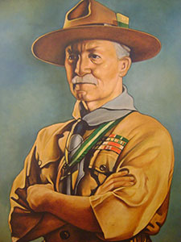

FUNDADOR DO ESCUTISMO
Em 22 de Fevereiro de 1857 nasceu em Londres, Robert Stephenson Smith Baden-Powell, que mais tarde seria famoso como fundador do Escutismo. Sendo o quinto de sete irmãos, filho do Rev. Prof. Baden-Powell e Henriqueta Graça Smyth, Robert teve na companhia dos irmãos mais velhos uma infância muito divertida em Londres, que naquele tempo era muito diferente da grande cidade de hoje, pois ainda oferecia muita facilidade para actividades ao ar livre. Assim, desde menino, Baden-Powell aprendeu através de caminhadas e excursões a cuidar de si. Embora órfão de pai, sempre encontrou na mãe e nos seus irmãos o apoio necessário para tornar a sua infância muito feliz.
Baden-Powell fez os seus estudos em escolas públicas, onde era muito popular e querido por todos, colegas e professores. Nas férias, aproveitava para acampar com seus irmãos mais velhos. Quando terminou os estudos secundários, Baden-Powell ingressou no exército.
Como oficial, viajou muito, conhecendo grande parte do mundo. Durante as suas viagens conheceu tribos de guerreiros da África, os vaqueiros americanos e conviveu com os índios da América e do Canadá. Graças à sua competência, honestidade e exemplo como líder de homens, Baden-Powell, fez uma carreira militar brilhante.
Podemos citar como exemplo a Guerra do Transvaal em 1889, onde comandou a guarnição de Mafeking, importante entroncamento ferroviário, cuja posse era de grande valor estratégico. A cidade foi duramente atacada, durante 217 dias, pelas forças inimigas, entre os anos de 1899 e 1900. Como havia poucos soldados regulares em Mafeking, Baden-Powell treinou os cidadãos capazes de empunhar uma arma e para isso teve que organizar um grupo de jovens cadetes, os adolescentes da cidade, que desempenhavam todas as tarefas de apoio, tais como: cozinha, comunicações, primeiros socorros, etc. Graças a esses recursos, à inteligência e coragem de seu comandante, foi possível a cidade resistir a forças muito superiores, até que chegassem reforços.
A maneira como os jovens desempenharam suas tarefas, os seus exemplos de dedicação, lealdade, coragem e responsabilidade, causaram grande impressão em Baden-Powell e, anos mais tarde, aquele acontecimento teve grande influência na criação do Escutismo.
Graças aos seus feitos na vida militar, Baden-Powell tornou-se um herói no seu país. Durante uma viagem a Inglaterra, Baden-Powell viu alguns rapazes criarem brincadeiras através de um livro, que ele havia escrito para batedores do exército e que continha explicações sobre como acampar e sobreviver em regiões selvagens. Então, conversando com os amigos, ele entusiasmou-se e resolveu realizar, em 1907, na ilha de Brownsea, um acampamento com vinte rapazes dos 12 aos 16 anos, onde transmitiu conhecimentos técnicos tais como: primeiros socorros, observação, técnicas de segurança para a vida na cidade e na floresta, etc.
Devido aos bons resultados deste acampamento, Baden-Powell começou a escrever o livro "Escutismo para Rapazes" que, inicialmente, foi publicado em fascículos e vendido nas bancas de jornais, durante o ano de 1908. Os jovens ingleses entusiasmaram-se tanto com o livro que Baden-Powell organizou e fundou o Movimento Escutista. Rapidamente o Escutismo alastrou-se por vários países do mundo. Em Portugal o Escutismo deu os primeiros passos ainda no território de Macau em 1911, tendo os seus impulsionadores regressado ao nosso país e fundado, em 1913, a Associação dos Escoteiros de Portugal. O Corpo Nacional de Escutas, Escutismo Católico Português, veio a ser fundado 10 anos mais tarde, em 27 de Maio de 1923, na cidade de Braga.
O Escutismo, nascido na Inglaterra, não respeitou fronteiras, alastrando-se por outros países, e, já em 1920, em Londres, reuniram-se num grande acampamento Escuteiros de várias nacionalidades. Foi neste primeiro acampamento mundial, denominado Jamboree, que 20.000 jovens aclamaram Baden-Powell como Chefe Mundial. Desde então, o crescimento do Escutismo foi grande e nem as duas guerras mundiais conseguiram enfraquecê-lo.
Depois de vários anos de dedicação ao Escutismo, viajando pelo mundo e fundando Associações Escutistas em vários países, Baden-Powell sentiu as suas forças escassearem. Retirou-se então para uma propriedade que possuía próximo da cidade de Nairobi, no Quénia. Ali, na companhia da esposa, dividiu o tempo entre pintura, a numerosa correspondência e as visitas de amigos. Faleceu na madrugada de 8 de Janeiro de 1941 enquanto dormia, deixando para nós, Escuteiros do mundo, não só uma enorme exemplo humano mas também uma Última Mensagem.
ÚLTIMA MENSAGEM DE BADEN POWELL
Caros Escuteiros
Se já vistes a peça Peter Pan, haveis de recordar-vos de como o chefe dos piratas estava sempre a fazer o seu discurso de despedida, porque receava que, quando lhe chegasse a hora de morrer, talvez não tivesse tempo para o fazer. Acontece-me coisa muito parecida e por isso, embora não esteja precisamente a morrer, morrerei qualquer dia e quero mandar-vos uma palavra de despedida.
Lembrai-vos de que é a última palavra que vos dirijo, por isso meditai-a.
Passei uma vida felicíssima e desejo que cada um de vós seja igualmente feliz. Creio que Deus nos colocou neste mundo encantador para sermos felizes e apreciarmos a vida. A felicidade não vem da riqueza, nem simplesmente do êxito de uma carreira, nem dos prazeres. Um passo para a felicidade é serdes saudáveis e fortes enquanto sois rapazes, para poderdes ser úteis e gozar a vida quando fordes homens.
O estudo da natureza mostrar-vos-á as coisas belas e maravilhosas de que Deus encheu o mundo para vosso deleite. Contentai-vos com o que tendes e tirai dele o maior proveito que puderdes. Vede sempre o lado melhor das coisas e não o pior.
Mas o melhor meio para alcançar a felicidade é contribuir para a felicidade dos outros. Procurai deixar o mundo um pouco melhor de que o encontrastes e quando vos chegar a vez de morrer, podeis morrer felizes sentindo que ao menos não desperdiçastes o tempo e fizestes todo o possível por praticar o bem.
Estai preparados desta maneira para viver e morrer felizes - apegai-vos sempre à vossa promessa escutista - mesmo depois de já não serdes rapazes e Deus vos ajude a proceder assim.
O Vosso Amigo Baden-Powell.